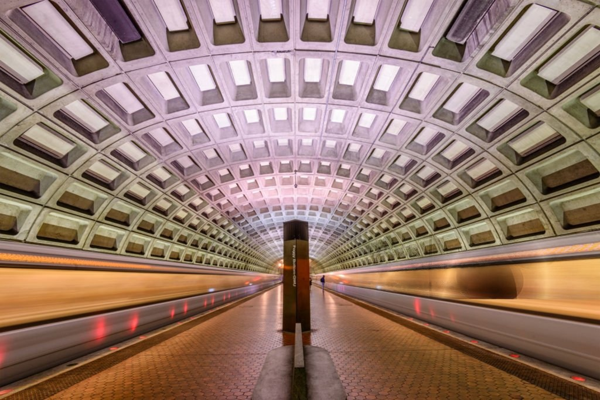

The Washington metropolitan area has one of the most extensive public transportation systems in the United States,
serving millions of passengers daily. Public transport, can always, however, be subject to delays and disruptions due to various factors
such as weather conditions, technical issues, or maintenance work.
This is an application that displays real-time DC Metro and Bus alerts using the WMATA Incidents API,
with data stored and tracked using Supabase.

Image credit: Sean Pavone